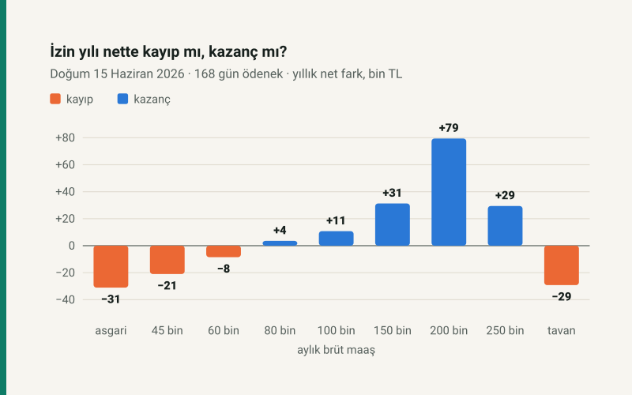

Kısa cevap
Doğum parası = günlük kazanç × 2/3 × 168 gün. Günlük kazanç, doğumdan önceki on iki ayın prime esas kazançlarının prim gününe bölümü. On iki ay 60.000 TL brütle çalışmış biri için günlük kazanç 2.000 TL, günlük ödenek 1.333,33 TL, toplam 224.000 TL. Asgari ücrette toplam 123.312 TL.
İzin kaç hafta? Doğumdan önce 8, sonra 16 hafta: 24 hafta. İkiz ve daha fazla gebelikte doğum öncesi 10 hafta. Ödenek için doğumdan önceki bir yılda en az 90 gün prim gerekir. Baba 10 gün ücretli izin alır.
Neden maaşa göre değişiyor? Ödenekten vergi ve prim kesilmez, maaştan kesilir. 30 günlük ödenek asgari ücrette normal netin %78,4'ü, 150.000 TL brütte %100,1'i, SGK tavanında %110,0'u.
Doğum izni kaç hafta?
7578 sayılı Kanun 1 Mayıs 2026'da yürürlüğe girdi ve İş Kanunu'nun 74. maddesindeki doğum sonrası süreyi 8 haftadan 16 haftaya çıkardı. Kadın işçi doğumdan önce 8, sonra 16 hafta, toplam 24 hafta çalıştırılmaz. Çoğul gebelikte doğum öncesi sekiz haftaya iki hafta eklenir. Aynı değişiklik SGK'nın ödenek süresine (5510 s.K. m.18) ve memurların izin süresine (657 s.K. m.104) de yapıldı.
Kim, doğumun neresinde, kaç gün?
Hafta; doğum günü sıfır. Annenin izni ve SGK ödeneği aynı süreyi kapsar.
- Doğuma iki hafta kalana kadar çalışmak. Sağlık durumu uygunsa ve doktor onaylarsa anne doğumdan önceki iki haftaya kadar çalışabilir; çalıştığı süre doğum sonrasına eklenir. Bu sınır 7578 sayılı Kanunla üç haftadan iki haftaya indi. Erken doğumda kullanılamayan doğum öncesi süre de doğum sonrasına eklenir.
- Baba. Eşi doğum yapan işçiye on gün ücretli izin verilir (4857 s.K. Ek m.2; önce beş gündü). Bu izni SGK değil işveren öder.
- İzinden sonra. Anne isterse 24 haftanın (çoğul gebelikte 26 haftanın) bitiminden sonra altı aya kadar ücretsiz izin alabilir. Ya da haftalık çalışma süresinin yarısı kadar ücretsiz izin: ilk doğumda 60, ikincide 120, sonrakilerde 180 gün; çoğul doğumda bunlara 30'ar gün eklenir (4857 s.K. m.74).
Doğum parası nasıl hesaplanır?
SGK'nın adı analık hâlinde geçici iş göremezlik ödeneği. Hesap dört adım:
- Şart. Doğumdan önceki bir yılda en az 90 gün kısa vadeli sigorta primi bildirilmiş olmalı (5510 s.K. m.18/1-c). Ödenek, çalışılmayan her gün için verilir.
- Günlük kazanç. Doğumdan önceki on iki ayın prime esas kazançları toplanır, bu kazançlara esas prim gününe bölünür (m.17). Güncel maaş değil, on iki ayın ortalaması. Her ayın kazancı o ayın SGK taban ve tavanıyla sınırlıdır; günlük kazanç alt sınırın (2026'da 1.101 TL) altına inmez.
- Oran. Günlük ödenek, günlük kazancın üçte ikisi (m.18).
- Süre. Tek bebekte 8 + 16 hafta, 168 gün; çoğul gebelikte 10 + 16 hafta, 182 gün. Doğum öncesi çalışılıp sonraya aktarılan haftalar ödenen gün sayısını değiştirmez.
Örnek: on iki ay boyunca 60.000 TL brüt. On iki ayın kazancı 720.000 TL, prim günü 360; günlük kazanç 2.000 TL. Günlük ödenek 1.333,33 TL, 168 günde 224.000 TL. İkiz gebelikte 182 gün, 242.667 TL.
Esnaf ve serbest çalışan (4/b) kadınlar da analık ödeneği alır; ödeme için genel sağlık sigortası dahil prim borcu olmaması gerekir (m.18).
Maaşa göre doğum parası
Tablo, aynı tarihte doğum yapan ve önceki on iki ayda hep aynı brütü almış çalışanlar için ödeneği ve izin yılının sonucunu gösteriyor. "İzinde kaybolan net", izin olmasaydı yıl boyunca alınacak net maaş ile izinli yılın net maaşı arasındaki fark. "İzin yılının net farkı", ödenek eklendikten sonra kalan.
| Aylık brüt | Günlük kazanç | Günlük ödenek | 168 günlük ödenek | İzinde kaybolan net | İzin yılının net farkı |
|---|---|---|---|---|---|
| Asgari ücret (33.030) | 1.101,00 | 734,00 | 123.312 TL | 154.415 TL | −31.103 TL |
| 45.000 | 1.500,00 | 1.000,00 | 168.000 TL | 188.990 TL | −20.990 TL |
| 60.000 | 2.000,00 | 1.333,33 | 224.000 TL | 232.499 TL | −8.499 TL |
| 80.000 | 2.666,67 | 1.777,78 | 298.667 TL | 295.124 TL | +3.542 TL |
| 100.000 | 3.333,33 | 2.222,22 | 373.333 TL | 362.545 TL | +10.789 TL |
| 150.000 | 5.000,00 | 3.333,33 | 560.000 TL | 528.695 TL | +31.305 TL |
| 200.000 | 6.570,25 | 4.380,16 | 735.868 TL | 656.445 TL | +79.423 TL |
| 250.000 | 7.264,69 | 4.843,13 | 813.645 TL | 784.195 TL | +29.450 TL |
| SGK tavanı (297.270) | 7.921,22 | 5.280,81 | 887.177 TL | 916.364 TL | −29.187 TL |
| 400.000 | 7.921,22 | 5.280,81 | 887.177 TL | 1.279.335 TL | −392.159 TL |
200.000 TL ile SGK tavanı arasında ödenek neden yavaşlıyor? Doğum Haziran'da olunca geriye dönük on iki ayın yedisi 2025'te kalıyor ve o ayların kazancı 2025 tavanıyla (195.041,25 TL) sınırlı. Tavanın üstünde ise ödenek hiç artmıyor, kaybolan net artmaya devam ediyor: 400.000 TL brütte izin yılı 392.159 TL eksiyle kapanıyor.
Neden üçte iki değil?
"Doğum parası maaşın üçte ikisi" doğru değil, çünkü üçte iki brüt kazanca uygulanıyor, karşılaştırılan ise net maaş. Maaştan %15 SGK ve işsizlik primi ile gelir vergisi kesiliyor; ödenekten hiçbiri kesilmiyor. Sosyal sigorta kurumlarının sigortalılara yaptığı ödemeler gelir vergisinden istisna (GVK m.25/6).
Aşağıdaki oranlarda on iki ayın kazancı 2026 sınırlarıyla hesaplandı:
- Asgari ücrette maaşın geliri zaten vergiden istisna; kesinti yalnız SGK primi. 30 günlük ödenek 22.020 TL, net asgari ücret 28.075,50 TL: netin %78,4'ü.
- 60.000 TL brütte 30 günlük ödenek 40.000 TL, yılın ortalama aylık neti 44.974 TL: %88,9.
- 150.000 TL brütte ikisi eşit: ödenek 100.000 TL, ortalama net 99.936 TL.
- SGK tavanında (297.270 TL) ödenek 198.180 TL, ortalama net 180.185 TL: netin %110,0'u. Maaş yükseldikçe vergi dilimi yükseliyor, ödenek ise vergisiz kalıyor.
İzin yılı ay ay
Bir de yılın tamamına bakmak gerekiyor. İzin aylarında maaş olmadığı için yıllık vergi matrahı düşük kalıyor; izinden sonraki aylarda gelir vergisi bir alt dilimden hesaplanıyor. 60.000 TL brüt örnekte bu etki yılın son iki ayında netin ayda 3.570 TL yüksek çıkması demek.
60.000 TL brüt: izin yılının on iki ayı
Doğum 15 Haziran 2026; izin 20 Nisan 2026 – 4 Ekim 2026.
Ödenek toplamı 224.000 TL, izin yüzünden kaybolan net 232.499 TL. Fark yılın sonunda −8.499 TL; içindeki 7.140 TL'lik vergi kazancı olmasa fark iki katına yaklaşırdı.
Kimin için kayıp, kimin için kazanç?
Aynı hesabı her maaş için yapınca bir eşik çıkıyor. Brüt 71.346 TL'nin altında ödenek kaybolan neti karşılamıyor; asgari ücrette izin yılı 31.103 TL eksiyle kapanıyor. 71.346 TL'nin üstünde ödenek kaybolan netten fazla; fark 2025 SGK tavanı olan 195.041,25 TL brütte en yükseğe, +84.379 TL'ye çıkıyor. 277.021 TL'den sonra tavan yüzünden yeniden eksiye dönüyor.
İzin yılı nette kayıp mı, kazanç mı?
Yıllık net fark (maaş + ödenek − izinsiz yılın neti), aylık brüt maaşa göre. Doğum 15 Haziran 2026.
Bunu iki kural birlikte doğuruyor: ödenek brüt kazancın sabit bir oranı ve vergisiz, maaşın vergisi ise kazanç yükseldikçe artıyor. Sonuç: düşük ücretli anne izin yılını kayıpla, orta ve yüksek ücretli anne kazançla kapatıyor. Bazı toplu sözleşmeler ve işverenler izinde maaşı tamamlıyor; o durumda sonuç bu hesaptan farklıdır.
Zam aldıysanız ödenek düşük çıkar
Günlük kazanç on iki ayın ortalaması olduğu için yakın zamandaki bir zam ödeneğe tam yansımaz. Ocak 2026'da 48.000 TL'den 60.000 TL'ye zam alıp 15 Mart 2026'da doğum yapan biri için on iki ayın on'u eski maaştan sayılıyor. Günlük kazanç 2.000 TL yerine 1.666,67 TL, yani %16,7 düşük. 168 günlük ödenek 224.000 TL yerine 186.667 TL: zamanlama yüzünden 37.333 TL eksik.
Asgari ücretlide bu kayıp görülmez: on iki ayın ortalaması yeni yılın alt sınırının altında kalırsa ödenek alt sınırdan (2026'da günde 1.101 TL) hesaplanır.
Kendi maaşınız, zam tarihiniz ve doğum tarihinizle: rapor parası hesaplama aracında "Doğum"u seçin. Araç ödeneği ve izin aylarının bordrosunu sitenin bordro motoruyla hesaplar.
Varsayımlar ve sınırlar
- Örnek doğum tarihi 15 Haziran 2026: izin 20 Nisan – 4 Ekim 2026, tamamı 2026'da. Böylece yıl tek bordro hesabıyla kurulabiliyor. 12 Eylül 2026 ve sonrasında doğum yapanın izni 2027'ye taşar; 2027 asgari ücreti ve vergi dilimleri açıklanmadan o yıl hesaplanamaz.
- Kişi doğumdan önceki on iki ayda aynı işyerinde, aynı brütle, her ay 30 gün çalışmış (zam bölümü hariç); başka geliri yok; işveren izin günlerinin ücretini ödemiyor.
- İzinli ay kısmi ise ücret 30 gün üzerinden düşülür; ayın tamamı izinliyse ücret sıfırdır.
- Emzirme ödeneği ayrıca ödenir; tutarı SGK Yönetim Kurulunun tarifesiyle belirlenir ve bu hesaba katılmadı.
- Rakamlar ödeneğin kanundaki hesabını gösterir. SGK'nın ödediği tutar, hizmet dökümündeki gerçek kazanç ve gün sayısıyla hesaplanır.
Kaynaklar
- 7578 sayılı Sosyal Hizmetler Kanunu ve Bazı Kanunlarda Değişiklik Yapılmasına Dair Kanun, m.2, 15, 16, 18 ve 19 — Resmî Gazete, 1 Mayıs 2026, sayı 33240
- 4857 sayılı İş Kanunu m.74 ve Ek m.2 — mevzuat.gov.tr
- 5510 sayılı Kanun m.15, 17 ve 18 — mevzuat.gov.tr
- 193 sayılı Gelir Vergisi Kanunu m.25/6 — mevzuat.gov.tr
- 2025 ve 2026 asgari ücret ve SGK tavanı: sitenin bordro motoru parametreleri
Kanun metinleri 3 Ekim 2026'da okundu. Tutarlar yazının kendi modülünden (dogum.js) gelir; modül ödeneği sitenin rapor parası çekirdeğiyle, izin yılının bordrosunu bordro motoruyla hesaplar. Tablo ve grafikler bu modülden çizilir; hepsi otomatik testle denetlenir.
Sık sorulan sorular
Doğum parası 2026'da ne kadar?
Doğumdan önceki on iki ayın günlük ortalama kazancının üçte ikisi, 168 gün için. On iki ay 60.000 TL brütle çalışmış biri 224.000 TL, asgari ücretli 123.312 TL alır. İkiz gebelikte süre 182 gün.
Doğum izni kaç hafta oldu?
1 Mayıs 2026'dan beri 24 hafta: doğumdan önce 8, sonra 16 hafta. İkiz ve daha fazla gebelikte doğum öncesi 10 hafta, toplam 26 hafta. Değişiklik 7578 sayılı Kanunla yapıldı.
Doğum parası almak için kaç gün prim gerekir?
Doğumdan önceki bir yılda en az 90 gün kısa vadeli sigorta primi. Esnaf ve serbest çalışanlarda ayrıca prim borcu olmaması gerekir.
Doğum parasından vergi kesilir mi?
Hayır. Analık ödeneği sosyal sigorta ödemesi olarak gelir vergisinden istisnadır (GVK m.25/6) ve SGK primi kesilmez. Bu yüzden ödenek, net maaşa oranla brütün üçte ikisinden daha fazladır.
Babalık izni kaç gün?
On gün ücretli izin. 7578 sayılı Kanunla beş günden on güne çıktı. Bu izni işveren öder; SGK ödeneği yoktur.